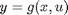

Using the Polysys Class
This is a quick demonstration of the capabilities of the @polysys class.
Timothy J. Wheeler
Dept. of Mechanical Engineering
University of California, Berkeley
Contents
Creating a polysys object.
Since the polysys class is built on the polynomial class, we first create some polynomial objects to work with:
pvar x1 x2 u1 u2
The equations of the system are of the form


Define the polynomial objects f and g
mu = -1; f = [ x2; mu*(1-x1^2)*x2 - x1 ]; g = [x1;x2];
The polynomial objects states and inputs specify the ordering of the variables. For example, specifying states(1)=x1 indicates that f(1) is the time derivative of x1.
states = [x1;x2]; inputs = [];
Finally, the polynomial objects are used to create a polysys object:
vdp = polysys(f,g,states,inputs)
Continuous-time polynomial dynamic system. States: x1,x2 State transition map is x'=f(x,u) where f1 = x2 f2 = x1^2*x2 - x1 - x2 Output response map is y=g(x,u) where g1 = x1 g2 = x2
Simulating the system.
The system is simulated over for a given time interval using the sim command. Note that the syntax is similar to ode45.
T = 10; x0 = randn(2,1); [t,x] = sim(vdp,[0,T],x0); plot(x(:,1),x(:,2),'k-') xlabel('x_1') ylabel('x_2') title('Trajectory for the Van der Pol oscillator')

Converting other objects to polysys objects.
The simplest object that can be "promoted" to a polysys is a double.
gainsys = polysys(rand(2,2))
Static polynomial map. Inputs: u1,u2 Output response map is y=g(x,u) where g1 = 0.54722*u1 + 0.14929*u2 g2 = 0.13862*u1 + 0.25751*u2
LTI objects can also be converted to polysys objects.
linearsys = rss(2,2,2); linearpolysys = polysys(linearsys)
Continuous-time polynomial dynamic system. States: x1,x2 Inputs: u1,u2 State transition map is x'=f(x,u) where f1 = -1.4751*u1 + 0.11844*u2 - 1.0515*x1 - 0.097639*x2 f2 = -0.234*u1 + 0.31481*u2 - 0.097639*x1 - 1.9577*x2 Output response map is y=g(x,u) where g1 = 1.4435*x1 + 0.62323*x2 g2 = -0.99209*u1 + 0.79905*x2
Polynomial objects can also be converted into a "static" polysys objects.
p = x1^2 - x1*x2; staticsys = polysys(p)
Static polynomial map. Inputs: u1,u2 Output response map is y=g(x,u) where g1 = u1^2 - u1*u2
Interconnections.
Polysys supports most of the same interconnections as the LTI class with the same syntax and the same semantics. Here are some examples:
append(linearpolysys,staticsys)
Continuous-time polynomial dynamic system. States: x1,x2 Inputs: u1,u2,u3,u4 State transition map is x'=f(x,u) where f1 = -1.4751*u1 + 0.11844*u2 - 1.0515*x1 - 0.097639*x2 f2 = -0.234*u1 + 0.31481*u2 - 0.097639*x1 - 1.9577*x2 Output response map is y=g(x,u) where g1 = 1.4435*x1 + 0.62323*x2 g2 = -0.99209*u1 + 0.79905*x2 g3 = u3^2 - u3*u4
series(linearpolysys,gainsys)
Continuous-time polynomial dynamic system. States: x1,x2 Inputs: u1,u2 State transition map is x'=f(x,u) where f1 = -1.4751*u1 + 0.11844*u2 - 1.0515*x1 - 0.097639*x2 f2 = -0.234*u1 + 0.31481*u2 - 0.097639*x1 - 1.9577*x2 Output response map is y=g(x,u) where g1 = -0.14811*u1 + 0.78991*x1 + 0.46034*x2 g2 = -0.25547*u1 + 0.20011*x1 + 0.29216*x2
The methods append, feedback, parallel, and series are used to interconnect polysys objects.
Discrete-time systems.
It is also possible to create discrete-time polysys objects, as follows:
a = 1; b = 1; fduff = [ x2; -b*x1 + a*x2 - x2^3 ]; gduff = [ x1; x2 ]; xduff = [ x1; x2]; uduff = []; Tsample = 1; duff = polysys(fduff,gduff,xduff,uduff,Tsample)
Discrete-time polynomial dynamic system. Sampling time: 1 States: x1,x2 State transition map is x(k+1)=f(x(k),u(k)) where f1 = x2 f2 = -x2^3 - x1 + x2 Output response map is y(k)=g(x(k),u(k)) where g1 = x1 g2 = x2
Discrete-time systems are simulated using the command dsim. Note that simulation time points are specified as (0:T), rather than [0,T].
T = 100; x0 = [.1;.1]; [t,x] = dsim(duff,(0:T),x0); plot(x(:,1),x(:,2),'k-') xlabel('x_1') ylabel('x_2') title('Trajectory for the Duffing map')

Other Utilities
Polysys object can be linearized at a given point. This syntax returns an SS object:
xe = [1;2]; vdplin = linearize(vdp,xe); class(vdplin)
ans = ss
This syntax returns the state-space data of the linearization:
[A,B,C,D] = linearize(vdp);
Check if a polysys object is linear.
islinear(linearpolysys)
ans =
1
islinear(vdp)
ans =
0
Subsystems are referenced using the same syntax as LTI objects:
linearpolysys(1,1)
Continuous-time polynomial dynamic system. States: x1,x2 Inputs: u1 State transition map is x'=f(x,u) where f1 = -1.4751*u1 - 1.0515*x1 - 0.097639*x2 f2 = -0.234*u1 - 0.097639*x1 - 1.9577*x2 Output response map is y=g(x,u) where g1 = 1.4435*x1 + 0.62323*x2
We can also get function handles to the system's state transition and output response maps. This is mostly used to build simulation routines that require handles to functions with a certain syntax (i.e., ode45).
[F,G] = function_handle(vdp); xeval = randn(2,1); ueval = []; % VDP is autonomous teval = []; % The time input is just for compatibility with ode solvers xdot = F(teval,xeval,ueval)
xdot =
-0.7420
0.9962
We can multiply polysys objects by scalars or matrices.
M = diag([2,3]); M*vdp
Continuous-time polynomial dynamic system. States: x1,x2 State transition map is x'=f(x,u) where f1 = x2 f2 = x1^2*x2 - x1 - x2 Output response map is y=g(x,u) where g1 = 2*x1 g2 = 3*x2
12*vdp
Continuous-time polynomial dynamic system. States: x1,x2 State transition map is x'=f(x,u) where f1 = x2 f2 = x1^2*x2 - x1 - x2 Output response map is y=g(x,u) where g1 = 12*x1 g2 = 12*x2
linearpolysys*M
Continuous-time polynomial dynamic system. States: x1,x2 Inputs: u1,u2 State transition map is x'=f(x,u) where f1 = -2.9503*u1 + 0.35533*u2 - 1.0515*x1 - 0.097639*x2 f2 = -0.46801*u1 + 0.94443*u2 - 0.097639*x1 - 1.9577*x2 Output response map is y=g(x,u) where g1 = 1.4435*x1 + 0.62323*x2 g2 = -1.9842*u1 + 0.79905*x2